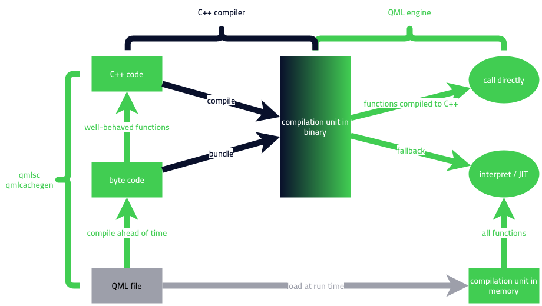

QML script compiler
The QML script compiler compiles functions and expressions in QML and JavaScript files to a byte code that can be interpreted or Just-in-time compiled by the QML engine.
In addition, it compiles some functions and expressions in QML files into C++ code, within limitations set by the nature of JavaScript. It generates C++ code for functions that can be exhaustively analyzed. The following flow chart explains the compilation workflow.

qmlsc and qmlcachegen
QML script compiler is available in two versions. One is qmlcachegen, which is a part of the Qt Quick Compiler. Another one is qmlsc, which is a part of the commercial-only add-on Qt Quick Compiler Extensions.
The base functionality of the QML script compiler is available in both the qmlsc tool and the qmlcachegen tool. qmlsc can generate more efficient C++ code when run in direct mode. It is enabled by passing --direct-calls via QT_QMLCACHEGEN_ARGUMENTS to qt_add_qml_module. In direct mode qmlsc expects that all C++ types used in your QML code can be made available to the generated code by simple C++ include statements. This means you have to link to private Qt APIs by passing Qt::QuickPrivate, Qt::QmlPrivate, etc to link_libraries() in CMake. qmlcachegen does not implement direct mode and ignores the –direct-calls option. Furthermore, qmlsc accepts a –static option that you can also pass via QT_QMLCACHEGEN_ARGUMENTS in qt_add_qml_module. In static mode, qmlsc ignores shadowing of properties. This is dangerous if your code actually shadows properties, but allows for more JavaScript code to be compiled to C++. qmlcachegen ignores the –static option.
Limitations when compiling JavaScript to C++
Many JavaScript constructs cannot be efficiently represented in C++. The QML script compiler skips the C++ code generation for functions that contain such constructs and only generates byte code to be interpreted or run through the Just-in-time compiler. Most common QML expressions are rather simple: value lookups on QObjects, arithmetics, simple if/else or loop constructs. Those can easily be expressed in C++, and doing so makes your application run faster.